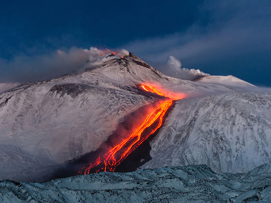

Parchi d’Italia
Home
Parchi
Attività ed Esperienze
Esplora i parchi d’Italia
Biodiversità, paesaggi, tradizioni, natura, cultura.

I parchi naturali italiani sono un tesoro di ecosistemi ricchi, paesaggi mozzafiato e unici legami tra uomo e ambiente. Scopri flora, fauna e le storie che rendono speciale ogni angolo protetto del nostro Paese.
Parchi in primo piano


Parco dell’Etna
Parco Nazionale della Sila
Parco Nazionale del Vesuvio
Parco Nazionale dell’Arcipelago Toscano

Attività ed Esperienze
I parchi naturali italiani offrono esperienze uniche per esplorare paesaggi straordinari: trekking panoramici, birdwatching, vulcani attivi e sentieri immersi nella biodiversità di monti e foreste.